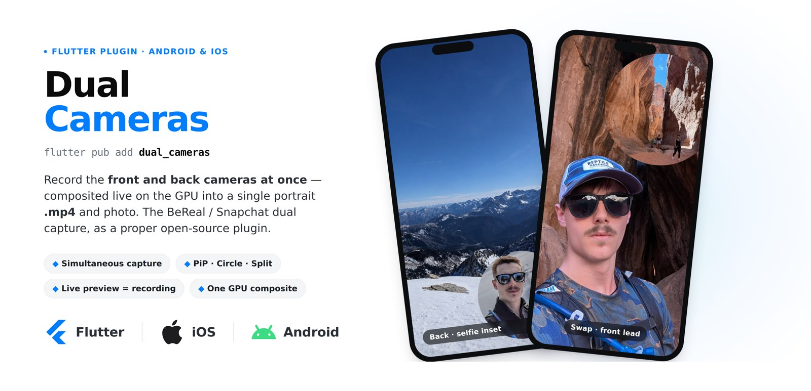

Dual Cameras is a native dual-camera recorder for Flutter that records the front and back cameras at the same time and composites them live on the GPU into a single portrait .mp4 and photo. It supports picture-in-picture (rounded rectangle or circle inset) and split layouts, with a real-time preview that matches the recorded file exactly. It is the BeReal and Snapchat style dual capture, built by Roman Slack as a proper open-source federated plugin for both Android and iOS, MIT licensed from day one.
The reason it exists: as of mid-2026 no Flutter plugin actually records a composited dual-cam video. The operating system APIs can do it (iOS AVCaptureMultiCamSession, Android CameraX concurrent camera), but every existing Flutter option stops at preview or photos or single-camera recording. The hard, novel part is the recorded composite, not the live preview overlay. This plugin owns the native compositor on both platforms and emits one clean .mp4.
The core of the engine is one unified manual GPU compositor (GLES on Android, Metal on iOS) that runs preview, video, and photo through the same path, so the three can never drift. Each frame is captured to an external texture, composited once on the GPU, then fanned out to the live preview, the encoder, and the still. Each camera is rotated upright from its sensor orientation and aspect-cover cropped into a 9:16 canvas (never stretched), with live swap of the full-frame camera and a mirrored front feed.
On Android it is a working alpha verified end to end on a Pixel 8: simultaneous front and back via CameraX concurrent camera, H.264 (MediaCodec) plus AAC (AudioRecord) muxed by MediaMuxer on a single monotonic clock for A/V sync, a composited JPEG photo via FBO read-back, capability detection with graceful single-camera fallback, thermal monitoring, and a perf HUD. On iOS it now builds and runs on a real iPhone (iOS 26): a Metal compositor brings up a live composited dual preview on AVCaptureMultiCamSession with hardwareCost gating, with recording and photo running through the same compositor and full on-device A/V-sync verification in progress.
It is laid out as a federated plugin: an app-facing Dart API, a Pigeon platform-interface contract, and separate Android (Kotlin) and iOS (Swift) implementations. It was built first for belo's short-form capture surfaces and open-sourced because the gap is real, with the official Flutter camera issues sitting on hundreds of thumbs-up.
Key Features
- Records the front and back cameras simultaneously into one composited portrait .mp4
- One unified GPU compositor (GLES on Android, Metal on iOS) drives preview, video, and photo so they can never drift
- Picture-in-picture (rounded rectangle or circle inset) and split layouts, with live swap of the full-frame camera
- Live preview that matches the recorded file exactly, letterboxed to 9:16 and never stretched
- In-sync audio: H.264 plus AAC muxed on a single monotonic clock (Android), AVAssetWriter with synced PTS (iOS)
- Composited still photo at the same WYSIWYG geometry as the video
- Capability detection with graceful single-camera fallback, thermal monitoring, and a perf HUD
- iOS hardwareCost gating that picks a binned format per camera so the multicam session actually starts
Tech Stack
View on GitHub → Visit dualcameras.com →
Designed and built by Roman Slack, Lead AI Platform Engineer. See more of Roman Slack's work on the projects page or get in touch via the contact page.